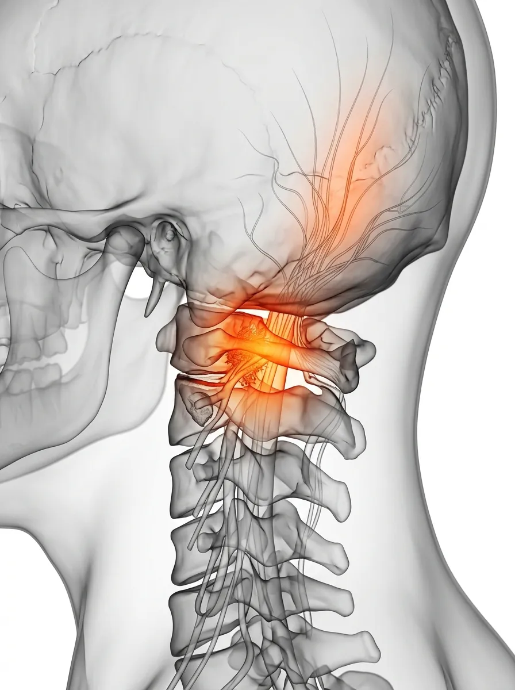

Intractable Clinic — Headache
머리가 아픈 것이 아니라,
목이 보내는 신호일 수 있습니다.
반복되는 두통에 진통제만 찾고 계셨나요?
보이지 않는 신경의 압박과 근육의 긴장을 찾아내어,
머리끝까지 맑아지는 일상을 선사합니다.
Symptoms Classification
내 두통의
진짜 이름
통증의 위치와 양상으로 원인을 구별할 수 있습니다. 정확한 진단이 반복되는 두통을 멈추는 첫걸음입니다.
경추성(Cervicogenic) 두통
목뼈 주변의 신경 자극으로 발생하며, 뒷머리부터 조여오는 느낌이 특징입니다. 경추 정렬을 바로잡는 것이 치료의 핵심입니다.
긴장성(Tension) 두통
스트레스나 피로로 머리 전체가 띠를 두른 듯 묵직한 통증입니다. 두피와 목 근육의 과긴장을 해소하는 것이 중요합니다.
편두통(Migraine)
머리 한쪽이 맥박 뛰듯 욱신거리며, 구역질이나 빛·소리에 예민해집니다. 신경계 안정과 혈류 정상화 치료가 필요합니다.

Pain Origin Point
Medical Insight — Cervical Logic
머리의 통증,
목에서 시작된 경고일 수 있습니다.
반복되는 두통의 원인을 뇌 자체에서만 찾으려 하면 근본적인 해결이 어렵습니다. 상부 경추의 미세한 변형은 주변 신경을 자극하고 뇌혈류를 방해하여, 진통제로는 해결되지 않는 만성 두통의 원인이 됩니다.
경추의 부담
잘못된 자세로 인해 머리의 하중이 정상 범위를 벗어나면, 경추 주변 신경과 근육에 과부하가 걸려 극심한 통증 신호를 보냅니다.
경추성 원인
만성 두통의 상당수는 머리 자체의 문제가 아닌, 목 주변 조직의 유착과 신경 눌림에서 비롯된 '경추성 두통'인 경우가 많습니다.
Pain Cycle Timeline
방치된 두통은
더 깊이 고착됩니다
진통제가 효과 없어지기 시작할 때, 이미 2단계입니다.
Signal Stage
신호기
피로 시 간헐적인 두통 발생, 약 복용 시 즉시 호전. 대부분 방치하거나 진통제로 넘기는 시기입니다.
Sensitive Stage
민감기
주 2~3회 이상 통증이 반복되며, 약의 효과가 점차 떨어지고 목과 어깨의 경직이 상시 동반됩니다.
Chronic Stage ⛔
고착기
매일 지속되는 통증으로 집중력이 저하되고, 수면 장애 및 무력감 등 전신 증상으로 확산됩니다.
Targeted Solution
삼성365의원 두통 특화 3R Therapy
신경을 이완하고, 지지 구조를 강화하여, 뇌혈류를 정상화합니다.

01
Release 이완
두통을 유발하는 상부 경추 주변의 미세 유착과 과민해진 신경절을 미세바늘로 정밀하게 이완합니다.

02
Reinforcement 강화
머리의 하중을 지탱하는 목 주변 심부 근육을 보강하여, 신경이 다시 압박받지 않는 구조를 만듭니다.

03
Recovery 정상화
과민해진 통증 회로를 안정시키고 뇌혈류의 흐름을 정상화하여 맑은 정신과 컨디션을 회복시킵니다.

"원인 없는 두통은 없습니다. 정밀한 진찰로 약 없이도 개운한 일상을 되찾아 드립니다."
삼성365의원 대표원장
자주 묻는 질문
MRI 검사에서도 이상이 없다는데 치료가 될까요? ↓
네, MRI는 뇌 자체의 구조적 문제를 보지만, 만성 두통의 많은 원인은 근육과 미세 신경의 기능적 문제입니다. 세밀한 진찰로 그 기능적 문제를 찾아내면 충분히 호전될 수 있습니다.
목 치료를 하면 두통이 정말 사라지나요? ↓
경추성 두통의 경우, 원인이 되는 목 근육의 유착만 해결해도 눈 앞이 밝아지는 듯한 즉각적인 개선을 느끼시는 경우가 많습니다.
오랫동안 진통제를 먹어왔는데 괜찮은가요? ↓
장기간 진통제 복용은 '약물 과용 두통(MOH)'을 유발할 수 있습니다. 근본 원인을 해결하면 진통제 의존도를 점차 줄일 수 있으며, 이 과정을 전문의와 함께 안전하게 진행합니다.
두통과 어지럼증이 함께 오는데 치료 가능한가요? ↓
두통과 어지럼증의 동반은 상부 경추 기능 장애와 밀접한 연관이 있습니다. 경추 관련 어지럼증(경추성 현훈)은 목 치료만으로도 크게 개선되는 경우가 많으며, 정밀 진찰로 감별 진단을 진행합니다.